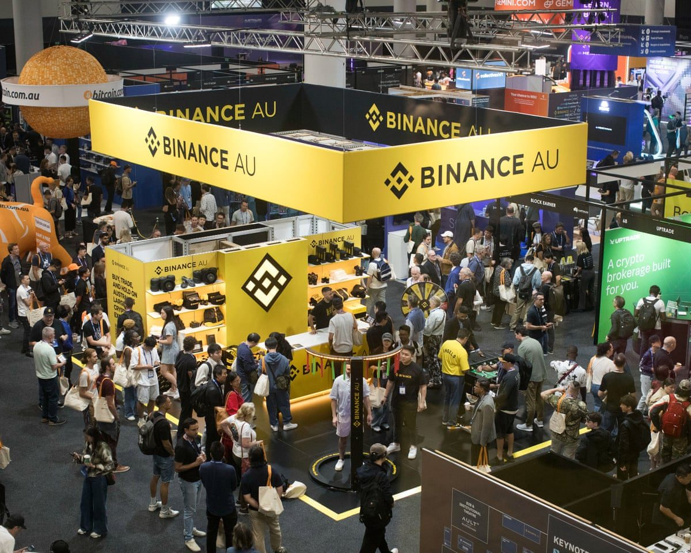

Binance ramt af det, der ligner historiens største kryptohack
Verdens største kryptobørs har sat udbetalinger på pause, efter at flere milliarder dollar er forsvundet fra børsens hot wallets Kryptotegnebøger, der er koblet til internettet, så børsen hurtigt kan sende penge ud. Det gør dem lettere at angribe end offline-lagre, og mindst 2 mia. dollar blev tømt fra Binances..

Binance oplyser over for Bloomberg, at midler for 6,3 mia. dollar er berørt. Analysefirmaet Arkham anslår, at 5,6 mia. dollar er stjålet, og TechCrunch skriver »op mod 5,7 mia. dollar«. Mindst 2 mia. dollar blev tømt fra børsens hot wallets, og udbetalinger er midlertidigt stoppet på flere netværk.
Grundlæggeren Changpeng Zhao, der i dag er største aktionær, siger, at det »ligner et hack«, og at han forventer, at kunderne bliver fuldt dækket. Binance siger, at brugernes midler er sikre.
Stablecoin En kryptomønt, der er bundet til en almindelig valuta, typisk 1 dollar. Udstederne kan fryse mønter, og Tether og Circle har frosset omkring 1,5 mia. og 800 mio. dollar.-udstederne Tether og Circle har frosset omkring 1,5 mia. og 800 mio. dollar, i alt er over 3 mia. dollar frosset. Bitcoin faldt 3,2 % til under 79.000 dollar. Den hidtidige rekord var Bybit-hacket på 1,4 mia. dollar i 2025, som blev tilskrevet Nordkorea. Samme dag stoppede Polymarket handlen, efter at en ekstern leverandør blev kompromitteret og omkring 2 mio. dollar blev stjålet.
Kilde: TechCrunch · Læs mere →